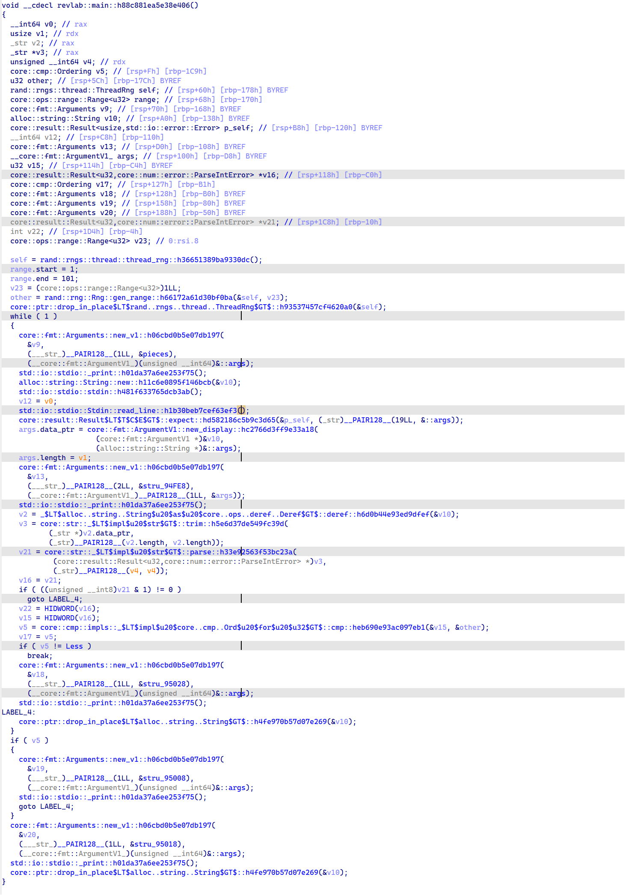
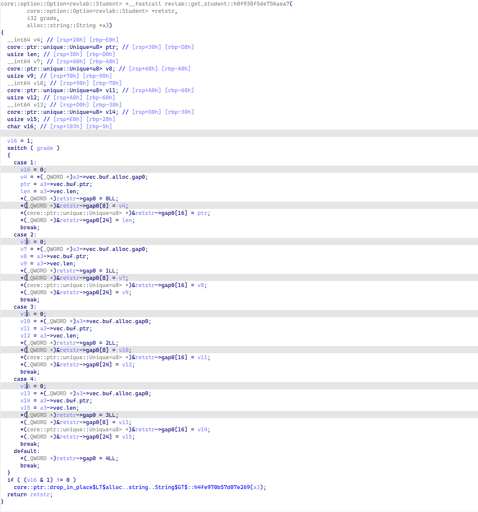
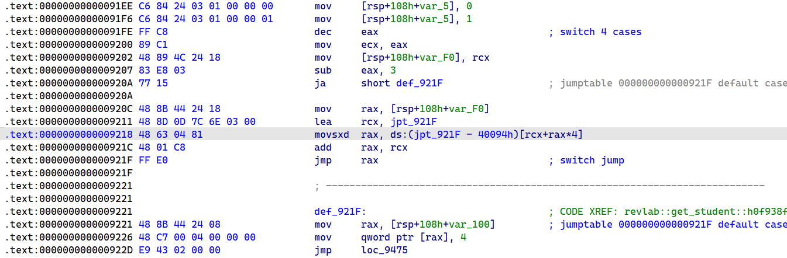
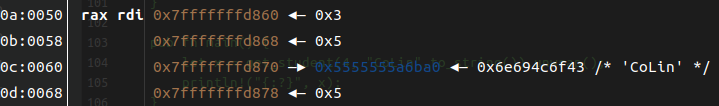
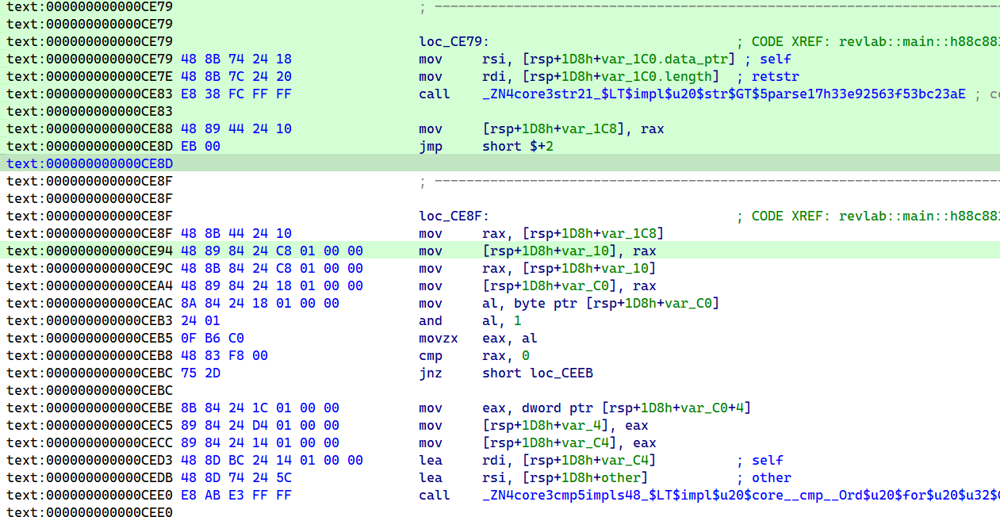
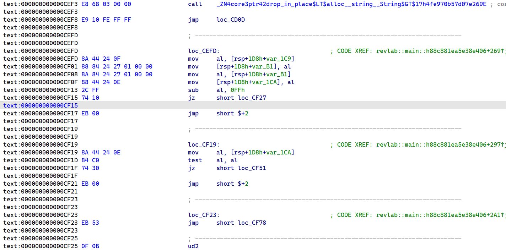

在上一篇文章中，我们比较完美地完成了第一次Rust ELF的逆向工作，但第一次编写的Rust程序毕竟只使用了非常有限的几种Rust特性，Rust还有很多的东西没有涉及，像是流程控制、泛型、Trait等。这些内容我们将在本文以及以后的文章中一一进行学习与探索。
Guess a number
0x01. Guess a number .part 1
本文从一个跳跃不是很大的程序开始，也就是一个真正的猜数字小程序：
1 | use std::cmp::Ordering; |
这里要注意，使用上一篇文章中的编译工具网站时需要添加库并在代码中通过extern crate rand手动加载rand库，否则会编译失败。
考虑到效率问题，本文对于上述代码的反汇编以IDA的反汇编结果为主，汇编代码分析为辅。

line 1
第一行中thread_rng方法返回ThreadRng实例，也就是使用于单个线程的随机数产生器实例，随后将其作为参数1（即self），参数2和参数3分别为范围的下界和上界。通过汇编代码可以发现，Range这个对象需要两个寄存器传递。通过查看Rust官方库源码也可以发现，Range实际上也就只有开始和结尾这两个属性值：
1 | pub struct Range<Idx> { |
gen_range方法以常规的方式使用rax返回了生成的随机数值。
随后，一个drop_in_place直接删除了ThreadRng实例，可见Rust对于生命周期的管理非常严格，后续代码已经没有使用ThreadRng实例的代码，因此Rust直接就将其删除了，尽最大可能减少对象重用与悬垂指针引用的可能。
loop
在Rust的反汇编界面中，continue很少见到，因为对于一个循环而言，其内部很有可能存在生命周期在循环之内的对象，因此即使Rust代码中写continue，Rust也需要首先将循环中创建的对象删除之后再开始新一轮循环。这也就导致IDA的反汇编界面中可能会出现很多goto。
line 3~7
println!的特征很好识别，Arguments::new_v1和_print一出，就知道肯定又是一次输出，不过输出的具体字符串内容直接查看反汇编界面无法确定，不过在汇编代码中也很好找。随后的String::new等也非常正常。
match
上述代码一共有两个match语句，第一个是将字符串parse的结果进行判断，替换了上一篇文章中的expect。这里parse函数的返回值是一个枚举对象Result<F, F::Err>。我们知道Rust的枚举对象是一个很强大的结构，比C/C++中的枚举对象好用很多，这是因为Rust的枚举对象可以理解成一个Key有限且确定的Map，选择一个Key之后还能够根据Key指定的数据类型自由设置Value。在这里我们不妨研究一下，Rust中的枚举对象是如何组织的。
0x02. Reverse for enum
下面通过一个简单的程序对枚举类型进行逆向分析。
1 |
|
上述代码定义了一个枚举类型。首先来看get_student方法：

可以看到，在反汇编界面中，IDA将match语句识别为switch语句，通过汇编代码的分析也能够很容易地发现跳表的存在。

通过查看main函数的方法调用，可以获得get_student方法的参数分别为：Student对象指针、grade参数、name参数。在switch语句中，我们发现每一个分支都有大量的值传送指令，含义未知，但我们可以通过函数调用前后获取到枚举类型的大小与内容。

经过分析，获取到了枚举对象的内容如上图所示。从函数内容等处可以推断出，枚举对象的第一个值3表示的是枚举对象grade的关键字索引，这里由于返回的是Student::Senior，索引为3，也即枚举对象中的4个索引值对应了0、1、2、3这4个索引值。后面还有3个值，其中有字符串指针和字符串长度，经过测试发现，String对象占0x18大小内存，偏移0x8为字符串指针，偏移0和0x10均为字符串长度。
之后，笔者修改了Student枚举类型的定义，在每一项后面加上了一个i32，经过调试发现枚举类型的属性偏移如下：
1 | 0x0 枚举索引 |
位于后面的i32类型反而在内存中更加靠前了。笔者推测这可能与Rust对tuple的内存排布有关，考虑到枚举索引很少有超过1个字节（不然就意味着有超过255个分支），使用后面4个字节能节省一定的内存空间。不过无论tuple是如何排布的，Rust的枚举类型在内存中的布局现在已经很清楚了，就是索引值+内容。
不过既然都已经看到了tuple的不寻常，接下来不妨也对其进行一番研究。
0x03. Reverse for Tuple
下面将尝试通过数个Tuple的反编译结果分析Tuple的内存布局。众所周知，Tuple就是若干个数据的集合，这些数据之间没有什么明确的关联，只有一个Tuple将它们约束在一个集合中。
1 | pub fn main() { |
对于上述代码逆向的结果如下：
1 | example::main: |
从相对于rsp的偏移量可以看出Tuple的排布情况，上述Tuple的内存排布顺序与数据的定义顺序相同。
但对于下面一个Tuple而言就不同了：
1 | pub fn main() { |
逆向的结果为：
1 | example::main: |
可以看到，这里是将String::new()产生的String实例放在了开头，随后才是5个i32，最后是&str。至于为什么要这样排列，询问了一个Rust大手子之后，给到的答案是：Rust数据结构和内存排布没有必然关联，Rust编译器可能根据不同的架构进行相应的内存结构调整，说人话就是——不能预判，不是必然顺序排列。不过考虑到对于Tuple的遍历、索引等操作在代码中都是固定的，编译器在编译的时候完全可以将地址偏移与索引值一一对应，不影响正常的索引，但对于反编译则是一个巨大的噩梦，因为你不确定某个索引值的数据到底有多少偏移。另外，如何通过汇编代码对栈空间的布局判断是否存在一个tuple也是一个问题。在定义变量时，一个tuple完全可以拆分为多个变量进行定义，反正在汇编代码中也不会保存临时变量的变量名。这在内存中会表现出来不同吗？
我们还是通过实际验证来解答我们的问题。
1 | pub fn main() { |
1 | pub fn main() { |
给出上面的两个Rust函数，通过查看6个整数值在内存中的排布可以发现，两者对于6个整数值都是按相同顺序进行排列，从低地址到高地址依次为2、3、5、7、11、13。不过在编译过程中发现，只有当变量被使用时，Rust编译器才会将这个变量编译到ELF中，否则这个变量将不会出现在ELF中。也就是说，我们不能仅仅通过栈内存排布判断源代码中是否定义了Tuple。不过转念一想，这样其实是合理的。Tuple实际上就相当于是一个匿名的结构体实例，想一想C语言中的结构体，实际上也就是将一堆各种类型的数据集合在一起，使用相邻的内存空间保存各个属性而已。定义一个具有两个int类型的C语言结构体，将其在栈内存中分配一个实例空间，与在栈内存中分配两个int类型的变量，在本质上是完全相同的。
因此，我们在对Rust ELF进行逆向分析时，不必纠结源码的编写者是否定义了元组，全部将其看做独立的变量就可以了。
0x04. Guess a number .part 2
好不容易说完了对Rust枚举类型和元组的逆向，接下来让我们回到最开始的那个程序，说到两个match语句。
对于第一个match语句，match的对象是一个枚举类型，在match语句体之内实际上是按照枚举类型进行分支。在汇编语句中，Rust是这样完成分支的：

注意0xCEAC处的指令：mov al, byte ptr [rsp+1D8h+var_C0]，第二个操作数是parse方法的返回值，也就是Result<F, F::Err>。考虑到这里的F是u32类型，整个枚举类型占用的空间大小为8字节，因此rax返回的直接就是对象本身的内容（0x??_0000_0000）。第1个字节为枚举索引值，后4个字节为转换后的值。在0xCEAC地址的这条指令将第1个字节赋值给al后进行了比较（cmp rax, 0），这也就是分支的具体实现方法——提取出枚举类型的索引值，根据索引值进行分支。

对于后面cmp方法返回值的match与之类似，本质上使用的也是if-else结构，主要是因为分支数量较少，没有必要使用跳转表，分支逻辑如上图所示。不过不同的是，第一个分支是判断枚举对象索引值是否等于0xFF，即-1。经过调试发现，Ordering::Less对应的枚举索引为-1，Ordering::Greater对应1，Ordering::Equal对应0。而对于每个分支，都只是一个简单的输出语句，这里就不再分析了。
0x05. 总结
在本文中，我们学习了：
- Rust的枚举类型在汇编代码层的数据结构实现。
- Rust的元组Tuple类型在汇编代码层无法被有效识别，但可将其看做多个独立变量进行分析。
- 三个
Ordering枚举对象的索引值为-1、0、1，与一般枚举对象索引值从0开始不同。 - Rust倾向于当变量不再使用时就删除变量对象，以尽可能地提高安全性。
- Rust的元组类型在汇编代码层栈空间的数据排列顺序与元组类型中数据的定义顺序不一定相同。